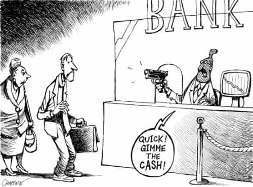

Debt is like junk food—although best avoided, moderate quantities won’t kill you, but too much will creep up on you and make your life suck. It allows us to buy things we can’t afford, but at a higher price. Ultimately, it’s a big contributor to today’s rat race. Quite unfortunately, many people get themselves swamped.
Governments aren’t immune either. Thanks to the Federal Reserve, the USA has an unlimited credit line to run up an astronomical amount of debt. This is what happens when politicians who have trouble balancing their own checkbooks are in charge. It’s little different for many other countries, but all that’s another matter.

The public spending money they don’t have is an inflationary pressure. As Ezra Pound (a poet, “deplorable” radio commentator, and political prisoner) noted, compound interest corrupts everything it touches. Is it any wonder that the world’s economy runs on fairy dust?
Types of debt

Hell no!
Installment loans for a house or car are the least bad; after paying them off, you own a high-value tangible asset. It’s hard to avoid, since few people keep large amounts of cash on hand. Student loans are another source of high-ticket debt. It’s okay so long as you can get a decent job with the degree. (If not, you’re up the creek.) Basic mitigation strategies involve acquiring the least amount of debt possible, shopping for the lowest interest rates, and being realistic about your return on investment.
Other sources of debt are more pernicious. The worst are predatory lending schemes like payday loans, title loans, and pawn shops. Those are sucker deals with exorbitant interest rates, and you should consider them as appealing as getting an arm and a leg chewed off by a gator.
Credit cards are also big offenders; the credit limits give you enough rope to hang yourself, they have relatively high interest, and the companies won’t hesitate to kick you when you’re down. If you’re paying them off in full every month, and they have a reward program, then they’re actually a benefit. However, if you’re running revolving balances, then you’re eating an interest charge, and it adds up.
For you, that’s as productive as feeding several $20 bills into a paper shredder every damn month. (Meanwhile, the banksters are getting enough gravy from their customers to float an aircraft carrier.) Then you end up paying interest on the interest; that really makes it suck. Without going into exponential math, let’s just say that it really eats into your future. Countless people are stuck in a debt spiral, barely scraping by while unable to make more than minimum payments. If you’re carrying a balance every month, then it’s time to make a plan to free yourself.
The solution

Time to get real
If you have a pile of old bills to pay down—or worse, you don’t have enough to stay solvent without hitting the plastic—then you need to make some hard choices. In principle, though, it’s actually pretty simple. Cash flow is an input-output equation. That means make more money, spend less, or do both.
On the income side, getting a better salary is easier said than done, but do be on the lookout for promotions or better jobs. However, getting a side gig is easier. It doesn’t even have to be steady work to add up: personal training, IT consulting, writing a book, helping people move, remodeling, picking oakum out of ropes for the British Navy, whatever. If you have a lot of collectibles you don’t need, sell them.
On the expenditure side, often this is easier said than done. As a society, we’re suffering from the disease of “affluenza”. This generally involves keeping up with the Joneses or buying crap we don’t need. Women get a bad reputation for retail therapy, but men aren’t immune. For anyone, that’s both irrational and pretty common.
Reducing expenses
Fun until the bills come due
Obviously an ounce of prevention is better than a pound of cure. Take the example of Fountain Hughes, who lived over a century without spending even a nickel on store credit. Although he was a former slave (and thus didn’t get a first-class education), he was considerably more sensible than millions of shopaholics hocked to the gills on plastic. Not spending more than you earn is a pretty obvious concept.
Being a big cheapskate yields benefits. For example, do you really need to buy a $5 cup of coffee every day at some virtue-signaling chain store? That adds up. Get your own coffee maker! Shop around for a decent price, or look on the used market, and say goodbye to Fivebucks Coffee forever.
Do you have cable TV? Why? It’s a lot of crap and propaganda that you don’t need. It’s easy to download most things worth watching. If you’re a television addict, then get an antenna for the damn idiot box.
For consumer goods, check out bargain stores, garage sales, and look online for auctions and classified listings. Restaurants are also an unnecessary expenditure; the food is marked up considerably, so learning to cook can save you quite a bit. Bar tabs can add up considerably too. Other than that, do you really need a new cell phone every year, and the unlimited data plan? Anyway, hopefully you get the picture.
Advertising is very sophisticated, studied intensely since the 1950s. Even the placement of items in grocery stores is well-researched. It’s time to tune that out! Distinguish between want-to-haves versus need-to-haves. Will you die if you don’t have some particular item? You probably won’t, other than food or medical care. Also ask yourself, will life really be that much better if you have that? Always remember, money is a good servant but a bad master.
Finally, if anyone repeatedly consumes your resources without providing reciprocal value, it’s time to get the moocher off your back. The party’s over; you have bills of your own to pay. (I can count on one hand the number of people I know who are honest enough to pay back loans, and still have a finger left over to flip off the rest.) If your brother is smoking meth on your couch all day, it’s time for him to get his ass to rehab. Helping out a girlfriend occasionally and within reason isn’t too bad, but never do this for someone stringing you along.
The specifics

If you follow the above, then you should be able to stop the bleeding on your budget and have some surplus to pay down old bills. That won’t happen overnight, but butch up about it.
Which debt should you pay down first, then others following? Three options:
- The one with the highest interest
- The one with the lowest balance
- The one with the company you hate the most
The first option is the most rational, since this mathematically means you’ll end up wasting the least amount of your money on interest. The second is the “debt snowballing” strategy, beneficial since you’ll most quickly see tangible signs of progress by signing fewer checks. The third will be psychologically satisfying likewise. It’s your bills and your decision.
You can call credit card companies and ask for a lower rate; sometimes they’ll do it. You also can log-roll it to balance transfer offers, but read the fine print carefully (it’s not free), and remember that’s just a temporary measure.
What to do when you’re free

Once the debt monkey is off your back, then you’ll have a decent surplus from not feeding $20 bills into the paper shredder every month. The first priority is to create an emergency fund; enough to cover unexpected car repairs and the like. Then it’s a good idea to save up “fuck you money“, just in case. Once you have a few thousand clams, you might consider putting it in a decent investment. By that I mean a well-diversified portfolio, rather than some Ponzi scheme or other scam. That’s worthy of its own discussion, so stay tuned.
Finally, after you’ve reached your goal, never dig yourself into another pit. You learned your lesson the first time around, right? Now get out there and free yourself. You’ll make a bankster cry.
Read More: 5 Myths In America That Cry Out For Realtalk